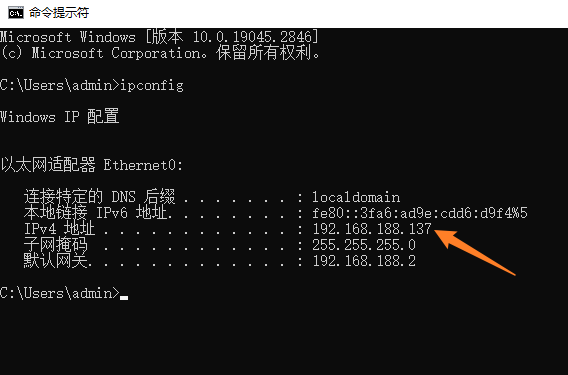
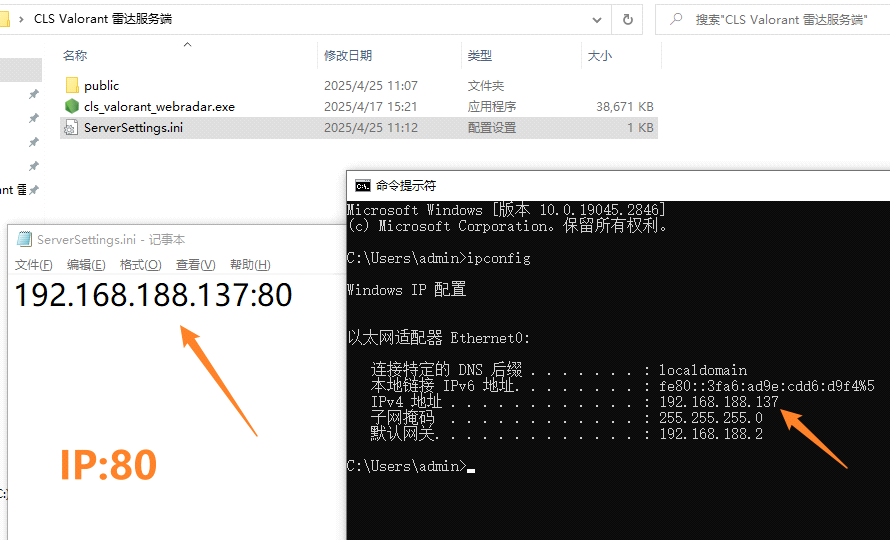
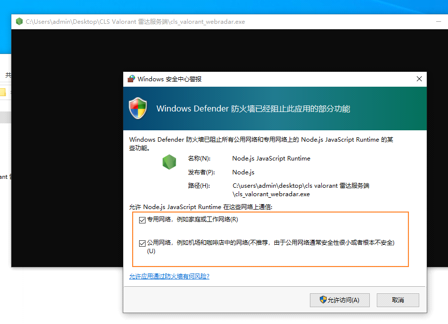
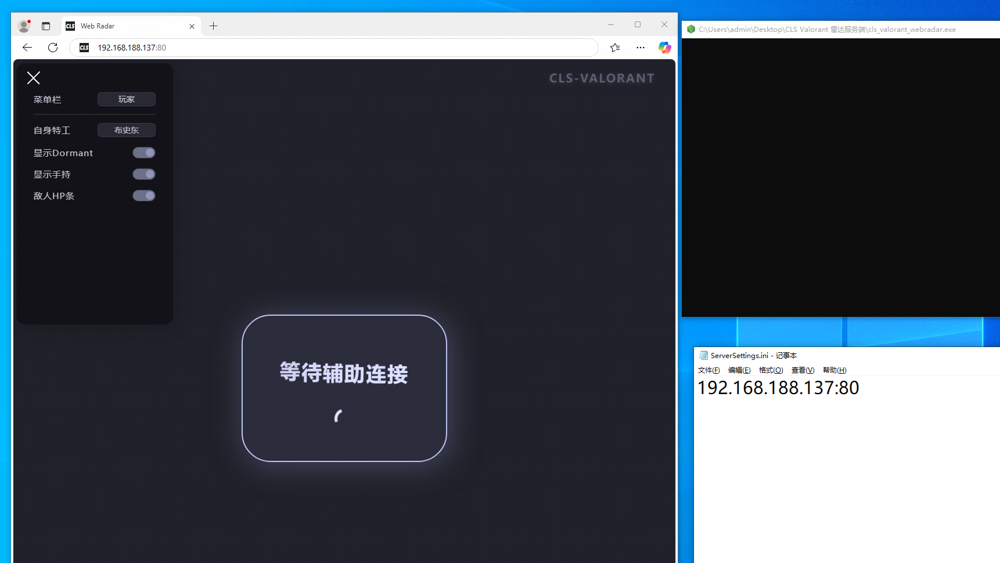

网页雷达搭建和使用
提示:
- 雷达网页请用微软Edge浏览器 / Google Chrome浏览器访问!
- 菜单连上雷达服务器后网页仍然显示”等待辅助连接”, 服务器雷达端口没有开UDP协议入方向!
自行购买云服务器
- 自行购买Windows云服务器(支持远程桌面连接的)
- 云服务器配置:
- 最低2H2G, 推荐4H4G
- 网络带宽不低于10M
- 服务器配置:
- 雷达端口(80为例)的TCP+UDP协议开放出入
- 云服务器配置:
搭建到本地副机教程(先学会本地搭建)
- 获取副机内网ip
- 打开cmd 输入"ipconfig"
- 一定要选对你的网卡对应的IPv4地址 (示例的电脑中网卡只有一个)
- 例如辅机如果是连Wifi上网, 这里则选Wifi网卡的IPv4地址
- 如果ipconfig输出很多张网卡不知道选哪个, 可以到设备管理器一个一个禁用网卡, 哪个禁用掉不能上网的则是要找的网卡
- 示例中 内网ip为"192.168.188.137"
- ServerSettings.ini中填写: IP+英文冒号+端口
- 默认填80, 如果被占用可以改成别的
- 
- 运行cls_valorant_webradar.exe 搭建完成
- 
- 提示: 黑框是正常现象
- 打开雷达网页
- 示例中为"192.168.188.137:80"
- 
- 服务端搭建完成 (此时是搭建到内网, 别人无法访问网页)
- 软件菜单连接雷达
- 输入"192.168.188.137:80"
搭建到云服务器
- 提示: 搭建方法与本地搭建基本一致, 区别是IP不要用ipconig获取, 而是填写服务器公网IP
- 先到云服务器控制台 -> 安全组 允许80端口(或者全端口)的所有协议出/入, 允许的IP填0.0.0.0/0, 表示允许所有IP出/入
- 如: 雷达端口是80, 服务器后台开启80端口的TCP协议+UDP协议 允许出/入
- 否则菜单连上雷达后网页仍然显示"等待辅助连接"!
- 运行cls_valorant_webradar.exe后, 浏览器输入IP:80进入网页雷达
- 例如云服务器IP是123.123.123.123, 雷达的ServerSettings.ini则填写123.123.123.123:80
- 雷达网址 http://123.123.123.123:80